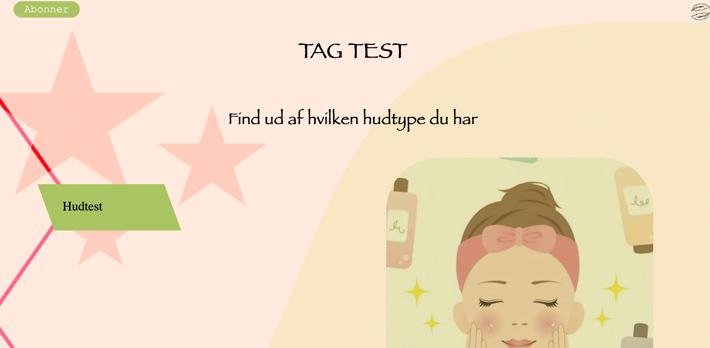
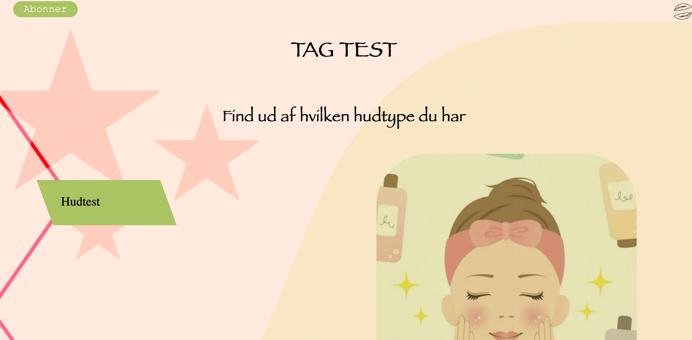
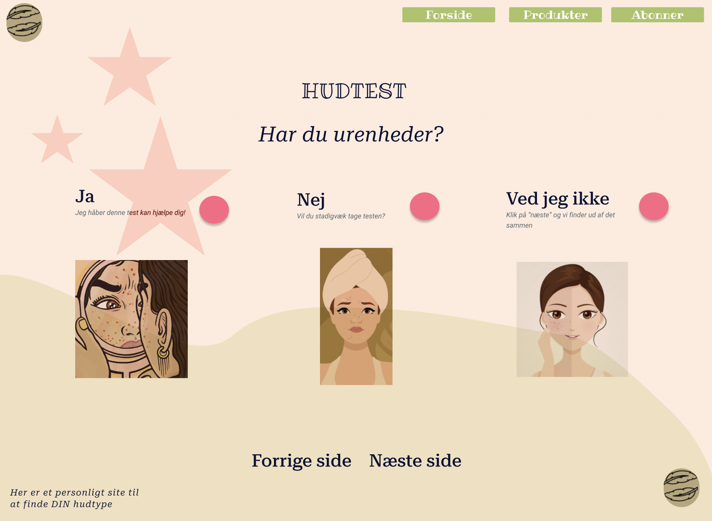
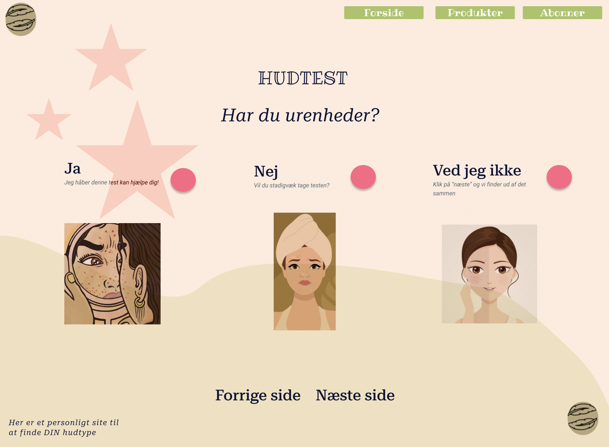

04 - Grundlæggende Animation
Tema beskrivelse
På tema 4 blev vi introduceret til Java script og samenkoblingen med css animationer. Dette gjorde vi for at få en bedre forståelse for mere avanceret websites. Vi blev introduceret til Adobe illustrator, hvori vi skulle designe og udvikle vores spil elementer, UI elementer, kompositioner og perspektiver. Vi lærte vigtigheden af Firefox inspektor, og hvorfor det er et godt værktøj.


Opgave beskrivelse
I dette tema skulle vi udarbejde vores eget spil, ved brug af Java script og css animationer. Igennem ide generering og research valgte jeg at lave et spil om forårets blomster med stilen Kawaii. Ide generering skete gennem skitser på papir, hvorefter de blev implementeret i adobe illustrator. For at spillet var velorganiseret og struktureret udarbejdede jeg aktivitetsdiagrammer og state machine-diagrammer, som var med til at vejlede implementeringen af Java script. Ved hjælp af de to dirgrammer var det lettere at gå igang med kodningen fordi de hjalp til forståelsen af spillet.
Metode beskrivelse
Og nu kommer vi til det forfærdelige som kunne set. Da spillet var færdigt og vi dagen inden skulle aflevere det vi havde lavet, vælger jeg at overskrive hele mit spil, med et forrige spil inden på filezilla. Jeg brugte derefter 12 timer på at få lavet så meget som jeg nu kunne nå, men dette resulterede i at jeg ikke kunne være med til ferniseringen, da jeg jo ikke havde et spil som kunne spilles. Det ses også tydeligt at jeg ikke har lavet det færdigt! Man kan ikke vinde spillet. Spil elementerne ændres ikke i udseendet når der klikkes på hhv. sol eller sky. Når tiden er gået, kommer man ikke tilbage til forsiden, som var planlagt. De lægger sig på skærmen i hjørnet. Og både tid og liv, ser ikke ud som de oprindeligt skulle. DOG kan man tabe spillet, OG er der lyd på dette. Her vises den rigtige række følge på spillet. De grædt dage er ovre, og når jeg kigger tilbage på mit spil, ser jeg også de gode ting. Jeg er vild med mit design. Jeg er vil med farve valget. Og min feedback fra præsentationen er også positiv, selvom spillet ikke virker.
Eksempel på CSS af "hudtest" knap:
 

Eksempel på HTML af checkboks:
 
